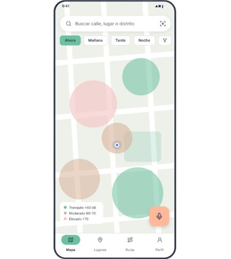

SonoMapa te muestra el nivel de ruido de calles, rutas y lugares de
Lima con mediciones de la comunidad, para que elijas por dónde
caminar y dónde estudiar.
Gratis · No graba audio · Mediciones anónimas

de los puntos monitoreados por el OEFA en Lima superan el estándar de ruido (PUCP, 2024)
puntos críticos de Lima superan los 80 dBA de forma continua (PUCP, 2024)
estudiantes que entrevistamos tuvieron que cambiar de lugar de estudio por el ruido
Busca una calle, lugar o destino y mira su nivel de ruido ahora y por horario.
Elige la ruta silenciosa o el lugar más tranquilo según tu tiempo.
Mide 30 segundos con tu celular y ayuda a que el mapa esté al día.